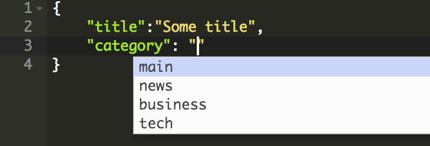

Why should I care?
100% Pure Javascript
Declarative/functional/meta programming
Strong typing, smart editor
Hammock Concepts:
- Classes
- Modules
- Schemas
- Plugins & Shells
Classes
In Hammock, a class is a document that follows the schema of a meta-class.
Bear with us for the next few slides!

{
"name": "react-meta-class",
"fields": {
"render": { "type": "function", "required": true }
"getInitialState": { "type": "function" }
"componentDidMount": { "type": "function" }
}
}
Schemas
a.k.a. Strongly-typed data classesSchemas in Hammock are like strong typing support for JSON documents.
A class has a schema if it implements the schema meta-class, meaning if it has a "fields" property with one or more fields.
{
name: "post-class",
fields: {
title: { type: "string", required: true },
category: { type: "select", options: ["main", "business", "tech"] }
state: { type: "select", options: ["draft", "published", "archived"],
default: "draft" }
}
}
Once you define a class, you can use the the Hammock JSON editor to create an instance.
The editor offers autocomplete support based on the class schema:
Just keep pressing Tab, autocomplete helps you fill in the document. Easy!

{
"fields": {
"name": { "type": "string", "required": true },
"fields": { "type": "object", "required": true, "value_fields": {
"type": { "type": "select", "required": true,
"options": ["string", "select", "boolean", "object", "array",
"number", "function", "markup", "date"] },
"required": { "type": "boolean" /* default: false */ },
"options": { "type": "array" },
"fields": { "type": "object" },
"value_fields": { "type": "object" },
"ref": { "type": "select", "ref": "class" },
"ref_field": { "type": "string" /* default: "name" */ }
}
}
}
}
Modules
Modules in Hammock work similarly as in other languages:
- They can be used to reuse code across projects.
- A module can also be deployed as a web app...
- or it can act as a plugin inside a App Template
Hammock.createModule({
name: "hello-world",
title: "Hello World!",
world: "earth",
render: function () {
return Hello {this.world}!;
}
});
Plugins & App Templates
A plugin is a module that plugs in to an "App Template" and provides some specific functionality.
Many different App Templates could be developed, and we're looking to provide a few out of the box.
The Dashboard App Template can is an app which can host a bunch of widgets, kind of like: